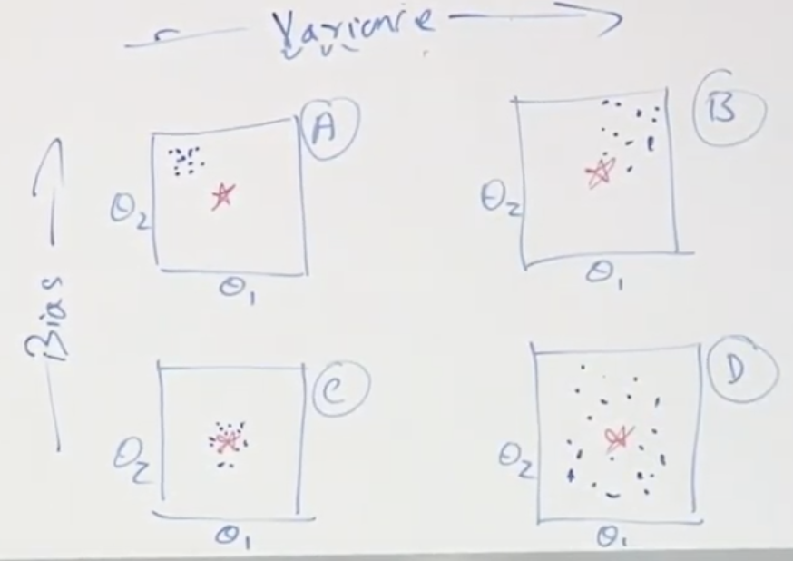
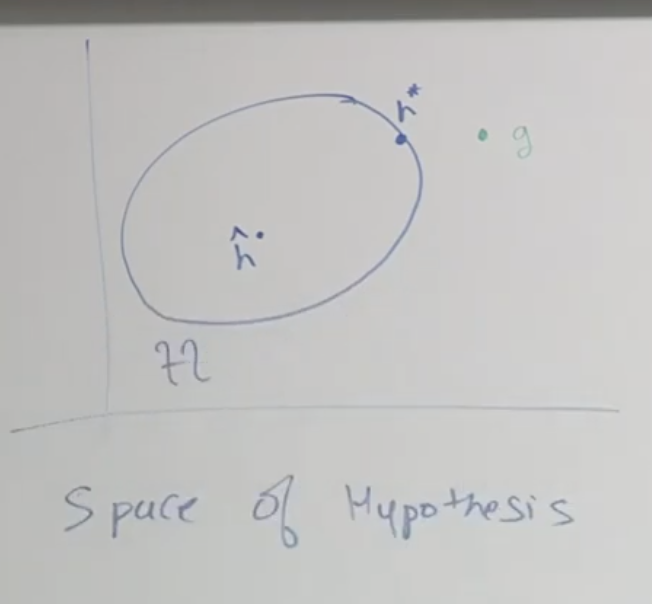

Lec 09-Estimation Error - ERM
Contents
Lec 09-Estimation Error - ERM#
Outline#
Setup/Assumptions
Bias/Variance
Approximate Estimation
Empirical Risk Minimizer
Uniform Convergence
VC dimension
Assumptions#
There exists a data distribution(data generating process) D from which \((x,y) \sim D\)
the data coming from that process becomes the training set and is a finite number
both test and train set is from the same process
All the samples are sampled independently
Suppose there is a set of m samples S, sampled from D data generating process, which is fed into the learning algorithm and the output of the learning algorithm is a hypothesis. A hypothesis is a function which accepts an input x and makes a prediction y about that x. This hypothesis \(\hat{h}\) is in the form of \(\hat{\theta}\)
Variable
The S here is random variable
The learning algorithm is a deterministic function
The hypothesis is again a random variable
Distribution
True parameter(\(\theta^{*}, h^{*}\)) that we wish to be the true - this is not random - a constant that we don’t know
Estimator
Sampling distribution (\(\hat{\theta}, \hat{h}\))
Bias and Variance#
 $\tiny{\text{YouTube-Stanford-CS229-Andrew Ng/Anand Avati}}$A/B have high bias
C/D have low bias
A/C have low variance
B/D have high variance
Properties of estimator#
Bias and variance are properties of first and second moments of sampling distribution
As \(m \rightarrow \infty\), \(Var[\theta] \rightarrow 0\)
The rate with which variance tends to 0 as m tends to \(\infty\) is called “statistical efficiency”
If \(\hat{\theta} \rightarrow \theta^{*}\) as \(m \rightarrow \infty\) - such algorithms are called consistent
If \(E[\hat{\theta}] = \theta^{*}\), then your estimator is called unbiased estimator
If your algorithm has high bias, no matter how much data or evidence is provided, it will always be away from \(\theta^{*}\). That is a high bias algorithm
If your algorithm has high variance, it means it gets easily swayed by the noise in the data
Bias and variance are independent of each other, there is no correlation among each other
Bias and variance are properties of algorithm at a given size m
Fighting Variance#
If the variance is high, then increase the amount of data which will naturally reduce the variance in algorithm
The other way is to add regularization either L1 or L2
If we care only about predictive accuracy, we can trade off high variance to some bias and reducing variance
Space of hypothesis#
 $\tiny{\text{YouTube-Stanford-CS229-Andrew Ng/Anand Avati}}$Let g be the “best possible hypothesis” - which is if we use this hypothesis and take the expected value of loss wrt the data generating distribution across infinite amount of data, and we get the lowest error with this hypothesis
Let H be the set/class of all hypothesis or logistic regression or set of all SVMs
Let \(\hat{h}\) be the hypothesis when a finite amount of data is used
Let \(h^{*}\) be the hypothesis among the set of all logistic regression hypothesis functions, which gives you the lowest error.
The best possible hypothesis h may not be among the hypothesis class H
Let \(\epsilon(h)\) be the risk/generalization error
this is the error of the entire distribution D
\(\epsilon(h) = E_{(x,y) \sim D}[\mathbb 1\{h(x) \ne y\}]\)
Let \(\hat{\epsilon}_{s}(h)\) be the empirical risk
this is the error generated on finite sample m
\(\hat{\epsilon}_{s}(h) = \frac{1}{m}\sum\limits_{i=1}^{m}[\mathbb 1\{h(x^{(i)}) \ne y^{(i)}\}]\)
Let \(\epsilon(g)\) be the Bayes error or irreducible error
say for the same x, if the data generating process generates different y, then no learning algorithm can reduce such error
Let \(\epsilon(h^{*}) - \epsilon(g)\) be the Approximation error
the difference between best possible error of the entire distribution and best possible error of the sample set
what is the price we are paying for limiting ourself into a class
attribute of class
Let \(\epsilon(\hat{h}) - \epsilon(h^{*})\) be the Estimation error
using the m examples we sampled, what is the error due to estimation
this is generally due to data
\(\epsilon(\hat{h}) = \) Estimation error + Approximation error + Irreducible error
Estimation error can be decomposed into estimated variance and estimated bias
\(\epsilon(\hat{h}) = \) Estimated variance + Estimated bias + Approximation error + Irreducible error
Estimated variance is simply called Variance
Estimated bias and Approximation error is called Bias
\(\epsilon(\hat{h}) = \) Variance + Bias + Irreducible error
How to reduce your bias#
Make H bigger
If we have a class that has high bias and some variance, by increasing the H size, the bias decreases but some variance is introduced
By having a higher class, there is a higher probability that your estimate can vary a lot
How to reduce your variance#
by adding regularization, we are shrinking the size of hypothesis class H
here we penalize those hypothesis whose \(\theta\) is very large
Empirical Risk Minimization ERM#
This is trying to minimize the training error
from classification perspective, this is increasing the training accuracy
\(\hat{h}_{ERM} = \text{arg }\min\limits_{h \in H} \frac{1}{m} \sum\limits_{i=1}^{m} \mathbb 1 \{h(x^{(i)}) \ne y^{(i)}\}\)
if we limit ourselves to empirical risk minimizers, then we can come up with more theoretical results
48:00
(to cont)